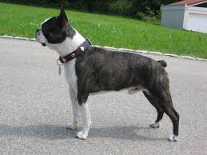

Most pet owners are convinced their animal is the very best in the world, but if you're interested in seeing how your Boston measures up against the competition, this is the page for you! Read on to learn about opportunities to get involved in showing your dog, as well as information about Bostons in dog shows past and present.

The Boston Terrier Club of America once again has your back-- They have their own annual event, the Boston Terrier National Specialty, as well as additional information about conformation shows and other competitive events.
The AKC offers a beginner's guide to conformation shows, so you can understand the ins and outs of dog shows and see if you'd like to get involved.
For a little trip through history, or just to see if you think your pup can do better, check out this list of past winning Bostons at the prestigious Westminster Kennel Club Dog Show.